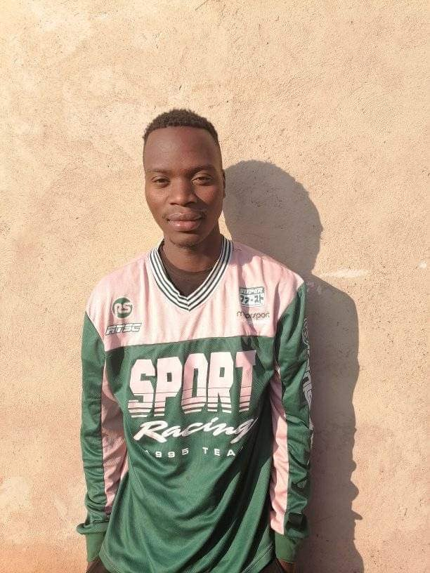

The family of Ward 6 Brazillian FC
One of the founders and a coach of Ward 6 Brazillian FC, he also played for Brazil FC the parent
o f Ward 6 Brazillian FC MR BONGINKOSI NGWENYA
Founder and a Manager of Ward 6 Brazillian VUSI NTSHALINTSHALI
WARD 6 BRAZILLIAN FC support structure ,he sponsored the club with a soccer kit Mr Bheki Mabasa
WARD 6 BRAZILLIAN FC support structure, he assists the club with transporting the players from training, to and from matches.Mr Lucky Ndwandwa
WARD 6 BRAZILLIAN FC support structure Mr Doctor Mabasa
WARD 6 BRAZILLIAN FC support structure Mr Mbongeni Magagula
WARD 6 BRAZILLIAN FC support structure Mr Sipho Galela
WARD 6 BRAZILLIAN FC additional management member and a support structure Miss Nontokozo Zwane
WARD 6 BRAZILLIAN FC volunteering secretary and a support structure Miss Faith Nkonyane

WARD 6 BRAZILLIAN FC support structure & player Mr FREEMAN NCUBE
Defensive midfielder, Founder and Captain of Ward 6 Brazillian FC, Syabonga Ntshalintshali aged 24 years
Support structure and a GoalKeeper of the club, Thabiso Ncube aged 22 years
GoalKeeper of the club, Mfanafuthi Thabethe aged 20 years
GoalKeeper of the club, Samkelo Msibi aged 19 years
The youngest GoalKeeper of the club, Bandile Mlipha aged 16 years
.jpeg)
Defender,midfielder and striker of the club,MELOKUHLE DLAMINI aged 19 years
.jpeg)
Defender of the club, Lindelani Nkosi aged 21 years
.jpeg)
Defender of the club, Sandiso Msimango aged 22 years
.jpeg)
Defender of the club,Ndlangamandla Andile aged 19 years
.jpeg)
Defender of the club,Lincoln Mavimbela aged 25 years
.jpeg)
Defender of the club, Khulekiswa Kunene aged 23 years

Defender of the club,Sthembiso Shelembe aged 19 years

Defender of the club, Mncedisi Ntshangase aged 19 years
Defender of the club, Siyanda Ndwandwe aged 17 years
.jpg)
Defender of the club, Thabo Ntshalintshali aged 29 years
Defender of the club, Nhlanhla Ngwenya aged 23 years
Midfielder of the club, Siyabonga Simelane aged 17 years
Midfielder of the club, Mkhwanazi Sambulo 18 years
Midfielder of the club, Khumalo Njabulo aged 22 years
Midfielder and striker of the club, Lindokuhle Ndlangamandla aged 18 years
Midfielder and striker of the club, Mangeni Sanele aged 18 years
Midfielders of the club and sons of the Coach, Neo&Junior Ngwenya aged 17 & 14 years
Midfielder and striker of the club, Nkosi Nicholus aged 17 years
Midfielder and striker of the club, Hlophe Mondli aged 19 years
Midfielder and striker of the club, Sabelo Vilakazi aged 15 years
Midfielder and striker of the club, Siphesihle Vilakazi aged 25 years
Midfielder and striker of the club, Nzimande Lindani aged 21 years
Midfielder and striker of the club, Msibi Linda aged 16 years